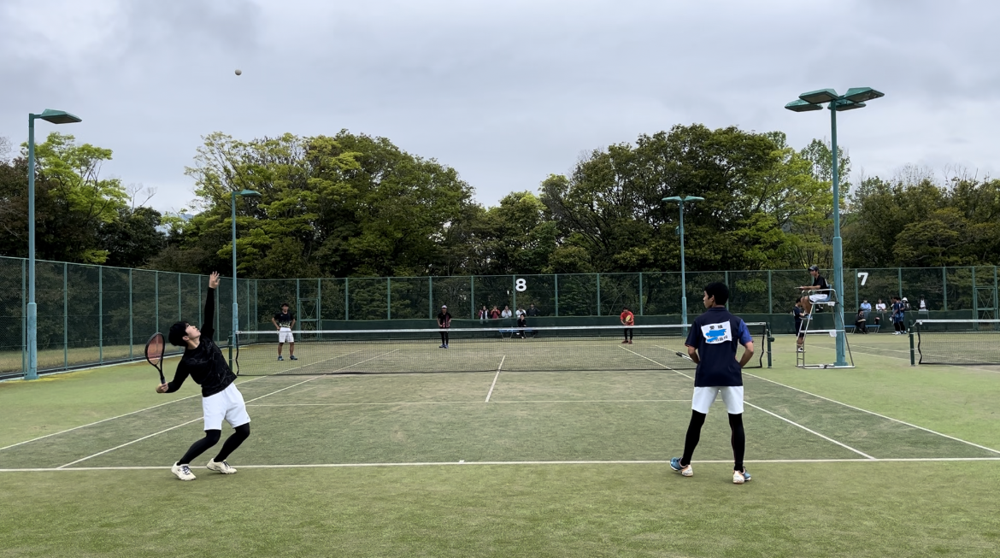
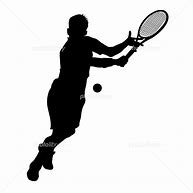
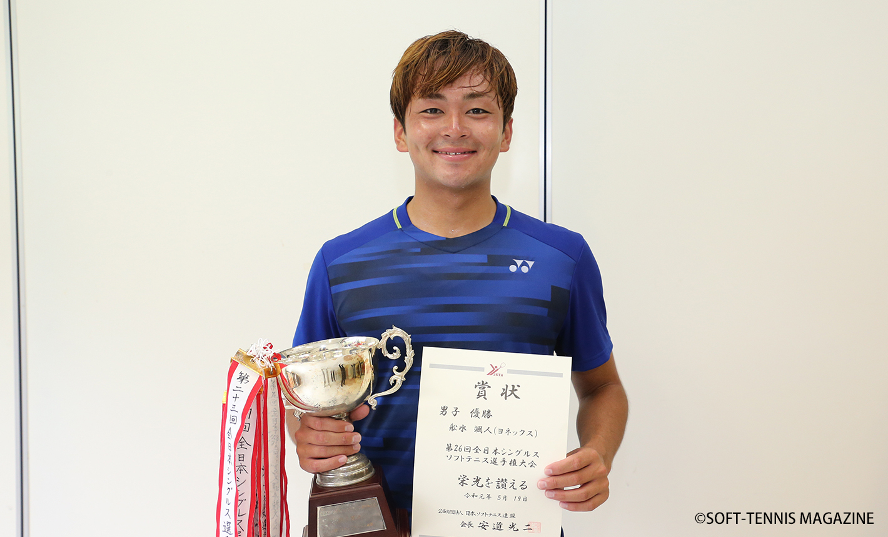

<!DOCTYPE html>
<html lang="en">

<head>
  <meta charset="UTF-8">
  <meta name="viewport" content="width=device-width, initial-scale=1.0">
  <title>Document</title>
</head>

<body>

</body>

</html>
<!DOCTYPE html>
<html>

<head>
  <link rel="stylesheet" href="./style.css">
  <meta charset="utf-8">
  <meta name="viewport" content="width=device-width, initial-scale=1">
  <title>Tiritsumo's profile</title>
</head>

<body>


  <div class="border1">
  </div>

  <div class="profile_top">
    <h1>絆のプロフィール</h1>
    
  </div>

  <div class="border">
  </div>

  <div class="profile_about">
    <h2>自己紹介</h2>
    
    <div class="profile_about_content">
      <p>
        吉田高校 ２年 電気電子科 酒井 絆です。<br>
        部活は中学の時からソフトテニスをしています。 <br>
        ソフトテニスの成績は最高県ベスト16まで行きました。
      </p>
    </div>
  </div>

  <div class="border">
  </div>

  <div class="profile_favorite">
    <h2>趣味</h2>
    <div class="profile_favorite_area">
      
      <p>趣味はゲームをすることと体を動かすことです。<br>
        週に2日くらいは早起きして走りに行くことがあります。<br>
        ゲームはAPEXをしたりVALORANTをしたりします。
      </p>
    </div>
  </div>

  <div class="border">
  </div>

  <div class="profile_place">
    <h2>お気に入りの場所</h2>
    <iframe
      src="https://www.google.com/maps/embed?pb=!1m18!1m12!1m3!1d15877.668622429503!2d132.5591988403262!3d33.21753940691071!2m3!1f0!2f0!3f0!3m2!1i1024!2i768!4f13.1!3m3!1m2!1s0x354f604b4c6da8e3%3A0xbe19e57bedc00c5b!2z5oSb5a6V5YWs5ZyS!5e0!3m2!1sja!2sjp!4v1739600783676!5m2!1sja!2sjp"
      width="600" height="450" style="border:0;" allowfullscreen="" loading="lazy"
      referrerpolicy="no-referrer-when-downgrade"></iframe>
    <p>ここがお気に入りの理由は宇和島城が見えて宇和島全体を見渡すことができるからです。</p>
  </div>

  <div class="border">
  </div>

  <div class="好きな選手">
    <h2>好きなソフトテニス選手</h2>
    
    <p>僕が好きなソフトテニス選手は船水颯人です。<br>
      船水颯人選手は天皇杯5回、全日本シングルス４回優勝ととてもすごい成績を持っています。<br>
      彼は去年12月に全日本選手権優勝を最後にプロを引退しました。<br>
      今は韓国へ行き韓国リーグに挑戦しています。
    </p>
  </div>

  <footer>©️ 2023 TIRITSUMO</footer>
</body>

</html>